Bárbaro
El bárbaro es una de las cinco clases iniciales de Diablo II. Es un personaje basado casi totalmente en el cuerpo a cuerpo, el único del juego capaz de manejar un arma melé a dos manos a la vez que un escudo o, incluso, de empuñar dos armas cuerpo a cuerpo simultáneamente. Posee una gran fuerza y aguante dado que luchará en primera línea la mayor parte del tiempo, aunque también puede apoyar al resto del grupo con sus gritos de guerra.
Historia
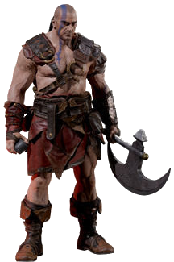Se cuenta que cuando el mundo era aún muy joven, se encomendó a las tribus de las Estepas del Norte una responsabilidad sagrada. En lo más profundo del gran monte Arreat, se halla una fuente de inmenso poder, crucial para el bienestar de toda la humanidad. Las tribus actuaban como guardianes de esa fuente y su estilo de vida gira alrededor de este deber sagrado.
Envuelto en un halo de misterio y tradición, este pueblo se refiere a sí mismo como los “Hijos de Bul-Kathos”, el gran rey de la antigüedad. Para proteger sus tierras de las fuerzas exteriores, llevan un estilo de vida nómada y se trasladan frecuentemente dentro de los confines de las estepas, manteniendo pocos asentamientos permanentes. Al aislarse del mundo que se encuentra más allá de sus territorios, evitan el uso de magia y maquinaria compleja, puesto que creen que esas cosas sólo pueden debilitar la resolución desarrollada a lo largo de muchos años.
Los Hijos de Bul-Kathos han desarrollado un vínculo muy estrecho con la tierra, y han aprendido a aprovechar las materias primas de la naturaleza para mejorar su propia habilidad física sustancial. Por ello, y por su independencia de los atavíos del mundo exterior, los Reinos del Oeste se han referido históricamente a estas tribus como “bárbaros”, un calificativo que contradice la rica historia cultural y espiritual que este pueblo posee en realidad. Aunque algunos comercian con este curioso pueblo, sólo lo hacen a lo largo de las fronteras más alejadas de sus tierras. Están prohibidas todas las intrusiones al territorio alrededor del monte Arreat y los guerreros de las tribus del norte están siempre preparados para reprimirlas. Cualquier intento de conquista se ha encontrado siempre con una resistencia feroz y decidida.
Un relato de las escaramuzas cuenta cómo hordas de bárbaros aparecieron furtivamente donde tan sólo un instante antes no había nadie. Los bárbaros llevaban el cuerpo pintado con extraños dibujos y aullaban como los fieros vientos de las montañas al mismo tiempo que descendían sobre los invasores. La mitad del ejercito trasgresor tiró al momento sus armas y huyó despavorido. La otra mitad sufrió la ofensiva de los norteños, ofensiva cargada de un ímpetu que ninguno de los invasores curtidos por la guerra había presenciado jamás. No se pidió clemencia. Tampoco se tuvo compasión. Sin embargo, al final, cuando los extranjeros tocaron retirada, los bárbaros no fueron a su caza... al menos nadie vio que lo hicieran.
Resulta curioso que hace poco, desde que se difundieron las noticias del resurgimiento de Diablo, un reducido número de guerreros bárbaros ha sido visto errando fuera de los confines de las Estepas, preparados para la guerra y en busca de noticias sobre los Males Fundamentales.
Habilidades
Gritos de Guerra
- 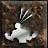Aullido:Ahuyenta a los enemigos que se encuentren dentro de su radio de acción.
- 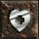Buscar Poción: Registra el cadáver de un enemigo en busca de una poción.
- 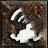Grito: Aumenta la defensa del Bárbaro y de sus aliados.
- 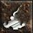Burla: Atrae a los enemigos hacia el Bárbaro.
- 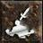Grito de Batalla: Reduce la defensa y el daño de los enemigos cercanos.
- 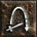Encontrar Objeto: Registra el cadáver de un enemigo en busca de un objeto.
- 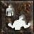Órdenes de Batalla: Aumenta la salud, el maná y la resistencia del Bárbaro y de sus aliados.
- 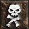Pabellón Lúgubre: Crea un tótem que ahuyenta a los monstruos del cadáver de un enemigo.
 Grito
de Guerra:Hace daño y
aturde al enemigo.
Grito
de Guerra:Hace daño y
aturde al enemigo.- 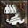Orden de Batalla:Aumenta en un nivel todas las habilidades del Bárbaro y de sus aliados.
Dominios de Combate
Habilidades de Combate
- 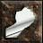Porrazo: ataca con mayor índice de ataque y daño, además de aturdir al enemigo.
- 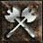Oscilación Doble: ataca casi simultáneamente con las dos armas que empuñe el Bárbaro.
- 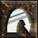Salto: el Bárbaro salta para superar obstáculos, salir o entrar en combate.
 Lanzamiento Doble: se lanzan dos armas, una desde cada mano, casi
simultáneamente.
Lanzamiento Doble: se lanzan dos armas, una desde cada mano, casi
simultáneamente.
- 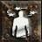Choque: ataca y aturde al enemigo.
- 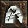Salto ofensivo: similar a Salto, en este caso el Bárbaro atacará al aterrizar.
- 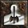Concentrado: ataque que no puede ser interrumpido, con lo que aumenta la defensa del Bárbaro.
- 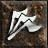Frenesí: con cada ataque, el Bárbaro aumenta su velocidad de ataque y de carrera.
- 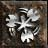Torbellino: el Bárbaro gira sobre sí mismo ondeando sus armas y golpeando a todo lo que encuentre a su paso.
- 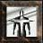Frenético: reduce la defensa del Bárbaro, pero a cambio aumenta su daño y añade daño mágico.
Objetos exclusivos
En la expansión Diablo II: Lord of Destruction se introdujeron objetos exclusivos para cada una de las clases. En el caso del Bárbaro, se incluyeron una serie de Yelmos especialmente diseñados para esta clase:
- Normal: El Gorro Mandíbula, El Yelmo Canino, El Yelmo Astado, El Casco de Asalto, El Guardia Vengador.
- Excepcional: El Visor Mandíbula, El Yelmo León, La Máscara Furia, El Casco Despiadado, El Guardia Criminal.
- Élite: El Yelmo de la Matanza, El Visor Furia, El Yelmo Destructor, La Corona del Conquistador, La Corona Guardiana.
 Tal y como cabría esperar,
los devotos
de la magia son un grupo segregado. Se muestran tan
suspicaces
ante los aprendices de las disciplinas rivales como un laico ante todos los practicantes de
la
magia
arcana. Sin embargo, ninguno esta tan extensamente calumniado y malinterpretado como el
grupo de
los
Sacerdotes de Rathma.
Tal y como cabría esperar,
los devotos
de la magia son un grupo segregado. Se muestran tan
suspicaces
ante los aprendices de las disciplinas rivales como un laico ante todos los practicantes de
la
magia
arcana. Sin embargo, ninguno esta tan extensamente calumniado y malinterpretado como el
grupo de
los
Sacerdotes de Rathma.  Resurrección: Devuelve la vida a un monstruo para pelear en tu
equipo.
Resurrección: Devuelve la vida a un monstruo para pelear en tu
equipo.
 Prisión Ósea: Crea una barrera de huesos alrededor del objetivo.
Prisión Ósea: Crea una barrera de huesos alrededor del objetivo.
 Rafaga de Hielo: Crea una esfera magica de hielo que hiere y
congela a los
enemigos.
Rafaga de Hielo: Crea una esfera magica de hielo que hiere y
congela a los
enemigos.
 Bola de Fuego: Crea una esfera explosiva de muerte por abrasión
que rodea a
tus
enemigos.
Bola de Fuego: Crea una esfera explosiva de muerte por abrasión
que rodea a
tus
enemigos. Espadas de hielo: Añade daño por frio al ataque.
Espadas de hielo: Añade daño por frio al ataque. Ráfaga de velocidad: Aumenta temporalmente la velocidad de ataque
y movimiento.
Ráfaga de velocidad: Aumenta temporalmente la velocidad de ataque
y movimiento.